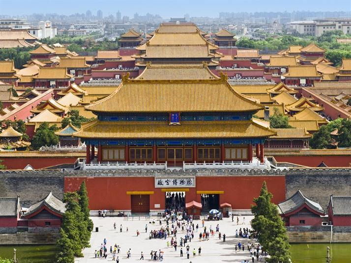

سور الصين العظيم

يعتبر سور الصين العظيم مشروعا دفاعيا عسكريا قديما بارزا ونادرا في التاريخ المعماري البشري. إنه رمز للأمة الصينية، ولم يظهر ذكاء أسلاف الصينيين فحسب، بل يجسد جهدا بذلوا فيه العرق والدماء. ويشتهر في العالم بتاريخه العريق وضخامة تحصيناته وعظمته وقوته. بدأ بناء سور الصين العظيم خلال عهد الربيع والخريف وعهد الممالك المتحاربة قبل أكثر من 2000 عام
قصر بوتالا

قصر بوتالا هي مجموعة مشهورة من القصور على شكل القلعة تقع على قمة جبل هوانغشان بمدينة لاسا في التبت الصينية. يعود تاريخ القصر إلى أكثر من 1300 عام، فقد تأسس في القرن السابع. وكان القصر الشتوي للدلاي لاما بين عام 1649 و1959، وبعد تلك الفترة أصبح متحفًا، وقد تم ضمه إلى قائمة التراث العالمي عام 1994
المدينة المحرمه

القصر الإمبراطوري أو المدينة المحرّمة والتي تعني المدينة القرمزية المحرّمة، من المعالم التاريخية لمدينة بكين. يقع القصر في قلب المدينة، وعلى الشمال من ميدان "تيانانمن. صنفته منظمة اليونيسكو ضمن التراث الثقافي العالمي. يعتبر من أهم الأماكن السياحية في الصين. يقع القصر الإمبراطوري وسط مدينة بكين.
تمثال ليشان بوذا العملاق

يقع عند نقطة التقاء ثلاثة أنهار في الجزء الجنوبي لمحافظة سيشوان، بالقرب من مدينة ليشان في الصين. بُني هذا التمثال أثناء فترة حكم سلالة تانغ (618-907)م. ويعد التمثال أكبر تمثال لبوذا منحوت في الصخر في العالم. أدرجت المنطقة الواقع فيها التمثال العملاق كموقع للتراث العالمي منذ عام 1990 بواسطة اليونيسكو. والتمثال لم يتضرر من الزلزال الذي ضرب الصين عام 2008
كهوف يونغانغ

كهوف يونقانغ هي مجموعة كهوف يصل عددها إلى 252 كهفا بقي منها 45 كهفا
بدأ بناء كهوف يونقانغ في عام 453 م خلال فترة أسرة وي الشمالية الملكية (عام 386 - عام 534 م)، وتم معظم أعمال البناء قبل عام 494 م، لكن أعمال نحت التماثيل استمرت حتى عام 525 م. في الكهوف هناك أكثر من 51000 تمثال حجري، ويبلغ ارتفاع أكبر تمثال 17 مترا، بينما يصل طول أصغر التماثيل عدة سنتيمترات، وتتميز تماثيل
فوجيان تولو

فوجيان تولو هي مجمعات سكنية تقع في جنوب شرق الصين مدرجة ضمن مواقع التراث العالمي، بنيت بين القرنين الثاني عشر الميلادي والقرن العشرين، وهي مباني مغلقة على شكل دائرة أو مربع ولها جدران سميكة وقد تضم 3 إلى 5 طوابق، وهي في الغالب تحوي بوابة واحدة للخارج تستخدم أبواباً خشبية سميكة ومغطاة بصفيحة معدنية، والطابق العلوي يحوي منافذ للأسلحة تستخدم للدفاع
وهذه المباني بنيت على أساس أن توفر دفاعات قوية ضد الأعداء